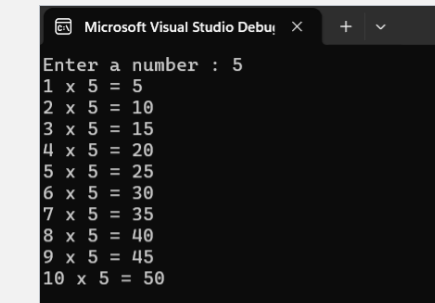

C# Sample Program
A C# program that I made that prints the multiplication table of a number based on the users input.
I’m developing my foundation in web technologies and working toward building more complex, meaningful projects. I believe in authenticity and clarity.
My name is Kairurie, but my real name is Kyle Dustin Yabut, a Computer Science student and aspiring web/mobile developer based in Metro Manila. I am passionate about blending technical skill with creative meaning.
I am a Computer Science student and aspiring web/mobile developer with a strong focus on blending functionality with design integrity. My work reflects technical precision and personal meaning, aiming to create digital experiences that are lightweight, accessible, and visually consistent.
Featured works — scroll for more.

A C# program that I made that prints the multiplication table of a number based on the users input.
Static site showcasing writing and curation, designed with emotional flow.

A videography about our event in school collaborating with my peers. I edited the whole video solo and it was posted on OLFU BED's official page.
I am continuously building my foundation in web and mobile development, improving my technical skills, and learning how to create projects that balance functionality with design integrity.
My current focus is on strengthening my portfolio, collaborating with peers, and preparing for future opportunities in the tech industry.
If you’d like to collaborate, commission work, or ask about me — email kyle.yabut@ciit.edu.ph.